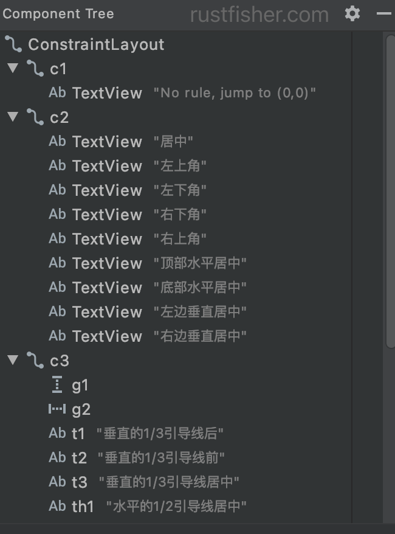

Android View的综述¶
更新日期: 2021-8-31
- 2021-8-31 新增文档
View是用户交互的基本组件。一个View占据了屏幕上的一个方形区间，能够绘制图像并处理事件。 View是UI的基础，我们前面看的TextView，Button，LinearLayout，RelativeLayout其实都是View的子类。 子类ViewGroup是各种layout的基类。ViewGroup可装载View和其它ViewGroup。
使用View¶
屏幕上的所有view都同属于1棵树（tree）。可以用代码来添加view或者在layout的xml文件中指定。 View的子类有很多，可显示文字（TextView）、图片（ImageView）、网页（WebView）等。
view的树形结构例子
在Android Studio的Component Tree面板可以查看layout的View结构 
有一些通用的操作：
设置属性：比如给TextView设置文字内容。每种子类都有不同的方法。在xml中也可以指定view的内容。
设置关注：framework会处理用户输入时的移动关注。要强行关注某个view，请调用requestFocus()。
设置监听器：View允许客户端设置一些监听器。例如所有的view都能设置监听器去监听focus事件。
开发者可以用setOnFocusChangeListener(android.view.View.OnFocusChangeListener)来设置focus事件监听。
也可监听点击事件。
设置是否可见：用setVisibility(int)方法显示或隐藏view
不要主动调measure layout draw的相关方法
Android framework 会处理View的测量（measure），布局（layout）和绘制（draw）工作。 开发者不需要主动调用相关的方法。除非是自定义了ViewGroup。
View的回调函数¶
我们关注过Activity，Service等等组件的回调函数（生命周期）。这里介绍View的回调函数。
| 分类 | 方法 | 说明 |
|---|---|---|
| 创建 | 构造器 | 用代码创建View用的构造器和加载layout中的View用的构造器不同。从layout加载View时，会解析xml中定义的一些参数。 |
onFinishInflate() |
从xml中加载view，当它以及它的所有子view都加载完成时走这个函数。 | |
| Layout | onMeasure(int, int) |
view和它的子view要决定尺寸的时候调用。 |
onLayout(boolean, int, int, int, int) |
view给它所有的子view指定尺寸和位置。 | |
onSizeChanged(int, int, int, int) |
当view的尺寸发生变化时走这个方法。 | |
| Drawing | onDraw(android.graphics.Canvas) |
view绘制它的内容时走这个方法。 |
| Event processing | onKeyDown(int, android.view.KeyEvent) |
当key事件发生时走这个方法。 |
onKeyUp(int, android.view.KeyEvent) |
key up 事件发生 | |
onTrackballEvent(android.view.MotionEvent) |
光标球移动事件 | |
onTouchEvent(android.view.MotionEvent) |
接收到了触摸事件 | |
| Focus | onFocusChanged(boolean, int, android.graphics.Rect) |
view获得或失去关注（focus）时调用 |
onWindowFocusChanged(boolean) |
view所在的window获得或失去关注（focus）时调用 | |
| Attaching | onAttachedToWindow() |
当view关联到window时调用 |
onDetachedFromWindow() |
当view与window解除关联时调用 | |
onWindowVisibilityChanged() |
当view关联的window可见性变化时调用 |
绘制流程¶
分为3个阶段：measure、layout、draw
在onMeasure方法中View会对其所有的子元素执行measure过程，此时measure过程就从父容器“传递”到了子元素中，接着子元素会递归的对其子元素进行measure过程，如此反复完成对整个View树的遍历。onLayout与onDraw过程的执行流程与此类似。
measure过程决定了View的测量宽高，这个过程结束后，就可以通过getMeasuredHeight和getMeasuredWidth获得View的测量宽高了。
layout过程决定了View在父容器中的位置和View的最终显示宽高，getTop等方法可获取View的top等四个位置参数（View的左上角顶点的坐标为(left, top), 右下角顶点坐标为(right, bottom)）。
getWidth和getHeight可获得View的最终显示宽高（width = right - left；height = bottom - top）。
draw过程决定了View最终显示出来的样子，此过程完成后，View才会在屏幕上显示出来。
自定义一个类继承View，放到activity的layout中，打印log观察各个函数调用情况
Activity onCreate
View LifeView(Context context, @Nullable AttributeSet attrs)
View onFinishInflate
Activity onStart
Activity onResume
View onAttachedToWindow
View onMeasure
View onSizeChanged
View onLayout
View onDraw
View onWindowFocusChanged true
View onMeasure
View onLayout
View onDraw
Activity onPause
View onWindowFocusChanged false
Activity onStop
Activity onDestroy
onResume）后，view与window关联起来。
先测量，决定自身大小，决定在父容器中的位置和大小，然后绘制到屏幕上。
根据上面的log，我们也可以看出View的主要绘制流程是measure、layout、draw。
onDraw和invalidate()¶
连续多次调用invalidate()，onDraw的执行次数是多少次。
[act] 多次 invalidate
View生命周期 onDraw, 1535337048483
View生命周期 onDraw, 1535337048499
View生命周期 onDraw, 1535337048516
View生命周期 onDraw, 1535337048532
View生命周期 onDraw, 1535337048549
onDraw执行的间隔大约是16ms。和Android刷新界面的时间间隔接近。
再看invalidate()方法注释，大意是当view可见时，onDraw方法将在未来某个时间点被调用。
/**
* Invalidate the whole view. If the view is visible,
* {@link #onDraw(android.graphics.Canvas)} will be called at some point in
* the future.
* ....
*/
public void invalidate() {
invalidate(true);
}
invalidate()方法后，并不保证会立即执行onDraw。
ID¶
View可能会有一个与之关联的数字id。通常来说这些是在layout xml文件中分配的id。 常见用法是：
定义一个Button在layout中并且分配一个id
<Button
android:id="@+id/my_button"
android:layout_width="wrap_content"
android:layout_height="wrap_content"
android:text="@string/my_button_text"/>
在Activity的onCreated方法里通过id找到这个Button
view的ID并不需要全局独一无二的，而是要在它所属的树里是唯一的。
位置 Position¶
一个view占据一个方形的位置。view的位置用左上角的点来表示。位置和尺寸的单位是像素（pixel）。
调用getLeft()和getTop()可以获得view的坐标。getLeft()返回view的left值，或者说是x值。getTop()返回top值，或者说是y值。这些方法返回的坐标是view在它的父view中的位置。例如，假设getLeft()返回20，表示这个view在它父view左边缘往右20个像素的位置。
另外，getRight()方法能返回view的right值。getBottom()方法返回bottom值。
getRight() == getLeft() + getWidth()
Size, padding 和 margins¶
view的尺寸（size）有宽（width）和高（height）。一个view实际上有两对宽高值。
第一对宽高是测量宽高（measured width/height）。这个尺寸表示一个view想要在父view里要多大。通过getMeasuredWidth() 和 getMeasuredHeight()方法可以得到测量宽高。
第二对宽高可以理解为实际宽高。这个宽高有可能与测量宽高不同。通过getWidth()和getHeight()可拿到宽高值。
为了测量尺寸，view需要考虑padding值。padding值的单位是像素（px），分为左上右下（left,top,right,bottom）。
padding可用于将view的内容偏移特定数量的像素。
例如，左padding为2像素的时候，会把view的内容从左向右推2个像素。
可以用setPadding(int, int, int, int)或者setPaddingRelative(int, int, int, int)方法设置padding值。
用getPaddingLeft()， getPaddingTop()， getPaddingRight()， getPaddingBottom()， getPaddingStart()， getPaddingEnd()获取对应的padding值。
view可以设定padding值，但没有margin值。ViewGroup能支持margin值。
setX与setTranslationX的区别¶
首先来看getX()与getTranslationX()的区别。
getX()获得view在屏幕中的x坐标。getTranslationX()获得相对于起始位置x的差值。
例如一个view初始时水平居中在屏幕中。getX, Y = [536.0000, 0.0000]; TranslationX,Y = [0.0000, 0.0000];。
setX指定了view在父视图中的位置。setTranslationX指定了相对于初始位置的位置。
如果我们想让view回到初始位置，可以直接调用setTranslationX(0)。
setTranslationX可以应用在drawerLayout中，弹出抽屉视图时让主视图跟着移动。
Layout¶
layout（布局）有2个过程：测量（measure）过程和布局（layout）过程。测量过程在measure(int, int)方法里实现，view树从顶往下遍历测量一遍。在遍历过程中，每个view把尺寸信息往下传。在测量过程中，每个view都存下了它的测量值。
第二个过程在布局方法中layout(int, int, int, int)，也是自顶向下进行的。
测量过程中，每个父view都用测量值来负责定位它的子view。
当view的measure()方法执行完毕，getMeasuredWidth()和getMeasuredHeight()的返回值已经确定了；它的子view同理。
一个view的测量宽高必须遵守它的父view的限制。这保证了测量过程的最后，所有的父view都能接受它们子view的测量结果。一个父view可能会多次调用它的子view的measure()方法。
例如，父view可能会传未指定尺寸给子view，来搞清楚子view想要多大的尺寸。如果子view的未固定尺寸太小或者太大，就给子view的measure方法传确定的参数。
测量过程用2个类来表示尺寸。MeasureSpec类用来告诉父view想要的尺寸和位置。
基础的LayoutParams类描述宽高想要多大。对于宽或高，可用以下的设定：
- 一个确切数字
MATCH_PARENT，表示和父view一样大（要扣除padding值）WRAP_CONTENT，能包含自己的内容即可（要考虑自己的padding值）
对于不同的ViewGroup的子类，有对应的不同的LayoutParams子类。例如LinearLayout.LayoutParams有weight这个属性。
父view传递给子view，用MeasureSpecs来传递要求。MeasureSpecs有3种模式：
UNSPECIFIED父控件对子控件不加任何束缚，子元素可以得到任意想要的大小，这种MeasureSpec一般是由父控件自身的特性决定的。比如ScrollView，它的子View可以随意设置大小，无论多高，都能滚动显示，这个时候，size一般就没什么意义。EXACTLY父view给一个确定的尺寸数值给子view。希望子View完全按照自己给定尺寸来处理。AT_MOST父view给一个最大值，希望子view不能超出限制。
事件处理和线程¶
一个view的基本处理流程如下
- 来了一个事件，分发到对应的view。这个view处理事件，并通知相关的监听器。
- 如果在处理事件过程中，view的边界需要变化，会调用
requestLayout()。 - 类似的，如果view的内容发生变化，会调用
invalidate()。 - 调用
requestLayout()或者invalidate()，framework会在恰当时间处理好测量，布局和绘制的过程。
UI线程
处理view的线程叫做UI线程。必须在UI线程操作view。 如果在其他线程里想要操作view，可以考虑使用Handler。
触摸事件描述¶
触摸事件分发¶
由根视图向子view分发。onInterceptTouchEvent 方法（ViewGroup才有）的返回值决定是否拦截触摸事件（true：拦截，false：不拦截）。
如果 ViewGroup 拦截了触摸事件，那么其 onTouchEvent 就会被调用用来处理触摸事件。
分发的过程中，ViewGroup可以拦截事件，不再继续分发。
触摸事件消费¶
onTouchEvent方法的返回值决定是否处理完成触摸事件
- true：已经处理完成，不需要给父 ViewGroup 处理
- false：还没处理完成 ，需要传递给父 ViewGroup 处理
onTouch，onTouchEvent区别¶
onTouch先于onTouchEvent，mOnTouchListener可以拦住onTouchEvent；
有mOnTouchListener，则执行mOnTouchListener.onTouch方法。
onTouchEvent获取手机屏幕的触摸事件。
本文也发布在
本站说明
一起在知识的海洋里呛水吧。广告内容与本站无关。如果喜欢本站内容，欢迎投喂作者，谢谢支持服务器。欢迎在下方评论~